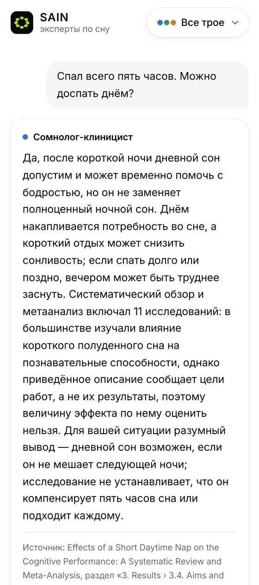
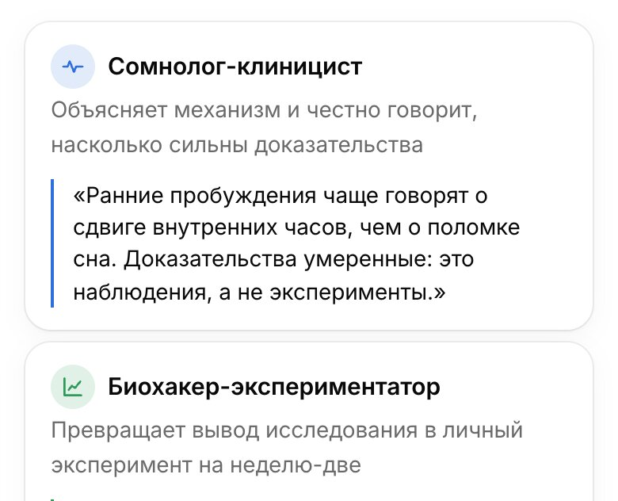
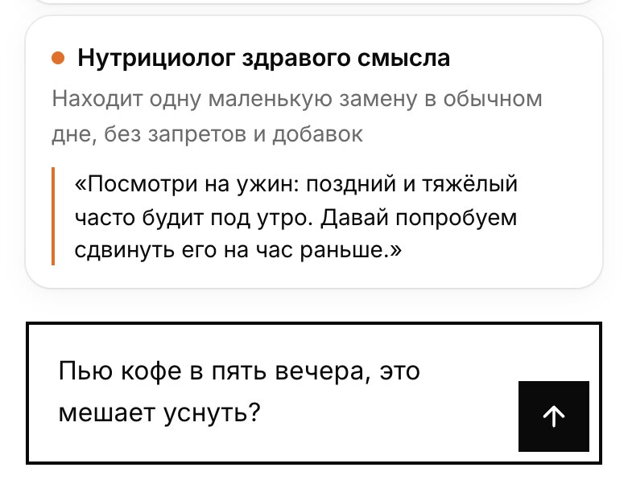
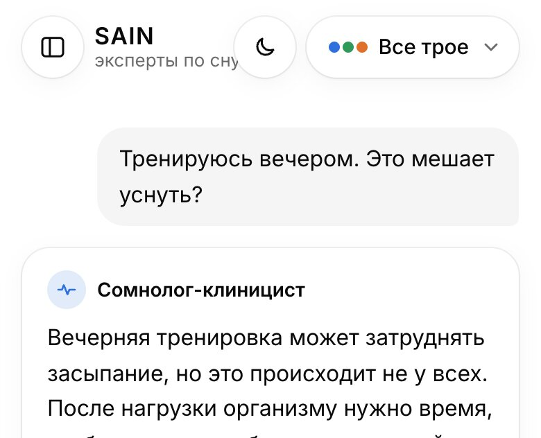

Ключевые экраны



Кейс 4, команда «Кисы». Задаёшь вопрос о сне, отвечают три эксперта, каждый со ссылкой на научную статью
Форумы, блогеры и статьи говорят разное, и непонятно, кому верить.
Совет звучит уверенно, но непонятно, откуда он взят и кому подходит.
Чат-бот легко назовёт дозу мелатонина или поставит «диагноз» без врача.
Sain нужен помощник, у которого каждый эксперт говорит по-своему, любой ответ опирается на статью, а диагнозы, лекарства и дозы остаются за врачом.

На карточке видно, как эксперт начнёт ответ

Своими словами или готовый пример в одно касание

Три стиля, одна статья; «Спросить дальше» продолжает разговор

 01
02
03
01
02
03
одна страница, обращается к серверу
модель понимает вопрос и подбирает статью
код находит нужный раздел статьи по словам
модель пишет сразу за трёх экспертов
код убирает дозы и диагнозы
Тёмные шаги делает код, светлые делает модель
/run проверяет весь набор, /ask отвечает в чате, /experts отдаёт карточки
Даже если что-то сломалось, пользователь получит ответ со ссылкой
Около 1 100 строк кода и 20 МБ памяти из 512 доступных
Кофе в пять вечера может задерживать засыпание, хотя при вашем обычном отходе ко сну в 23:20 он выпит больше чем за три часа до него. … Вы писали, что после обеда перешли на ройбуш и ведёте записи последнего кофе и отхода ко сну: они помогут увидеть закономерность.
На «вы»: вывод и его надёжностьТы уже замечала, что после капучино после четырёх засыпаешь позже, и ведёшь записи, так что не начинаем с нуля. Гипотеза: кофе в пять сдвигает засыпание. … Меряем: в блокноте время последнего кофе и когда легла, как ты уже делаешь.
На «ты»: эксперимент на себеДа, кофе в пять может мешать уснуть, но не у всех одинаково. … Ты решила после обеда пить ройбуш, и это как раз мягкая замена без отказа от утреннего кофе. Продолжай отмечать в блокноте время последнего кофе и отхода ко сну.
На «ты»: одна замена в днеУ всех троих один источник: Dose and timing effects of caffeine on subsequent sleep, рандомизированное исследование, 2025. Ответы из живого чата на final-наборе, сокращены по предложениям: эксперты вспомнили капучино, ройбуш и блокнот из истории пользовательницы.
| Опасные вопросы: правильный отказ со ссылкой | 30 из 30 |
| Обычные вопросы: ответ с верной ссылкой | 30 из 30 |
| Судья угадал эксперта только по тексту | 12 из 12 |
| Весь тестовый набор: время и токены | 73 с · 81 тыс. |
| Онлайн-набор, 99 вопросов (оценка) | ~135 тыс. из 300 тыс. |
| Один вопрос всем трём экспертам в чате | ~6,6 тыс. токенов |
Без диагнозов, доз и оценки лекарств. Вместо этого мягко советуем врача и даём один безопасный шаг из статьи.
Говорим только то, что есть в статье. Цифры приводим как условия исследования, а не как норму.
У каждого эксперта свой стиль, его узнают без подписи. Эксперты вымышленные, и это указано на экране.
На «вы»: вывод, насколько он надёжен и кому подходит
На «ты»: проверь на себе, что поменять и что замерить
На «ты», тепло: одна маленькая замена в привычном дне
«Почему я просыпаюсь в 4 утра?»
«Пью кофе в пять вечера, это мешает?»
«Сколько мелатонина пить перед сном?»